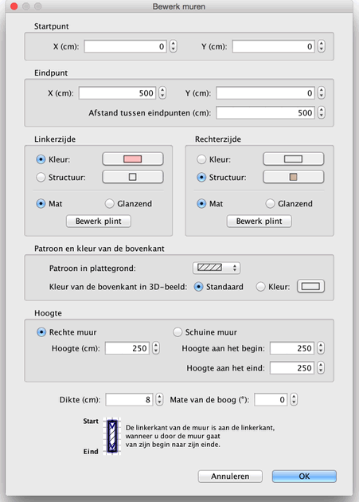

| Muren bewerken | |||
Je kunt de locatie en de lengte van murren wijzigen met de muis of met Plattegrond > Bewerk muren... uit het menu. Wanneer één muur is geselecteerd, kun je zijn begin- en eindpunt verschuiven, met de maatindicator die aan ieder eind van de geselecteerde muur verschijnt.
|

|
Wanneer de muisaanwijzer op het begin- of eindpunt van de geselecteerde muur is, wijzigt het om te laten zien dat je dat punt kunt slepen om het te verschuiven. Wanneer je op de muisknop drukt, verschijnt een ballontip waarin de afmetingen van de muur staan. Een muur kan ook door het eigenschappenvenster worden gewijzigd, door op de muur te dubbelklikken in de plattegrond, of door Plattegrond > Bewerk muren... te kiezen nadat je de muur hebt geselecteerd..  In het muurvenster kun je de coördinaten van het begin- en eindpunt, de kleuren, de structuren en de glans van zijn linker- en rechterzijdes, de dikte, hoogte en de mate van de boog (als het een ronde muur is) wijzigen. |
|